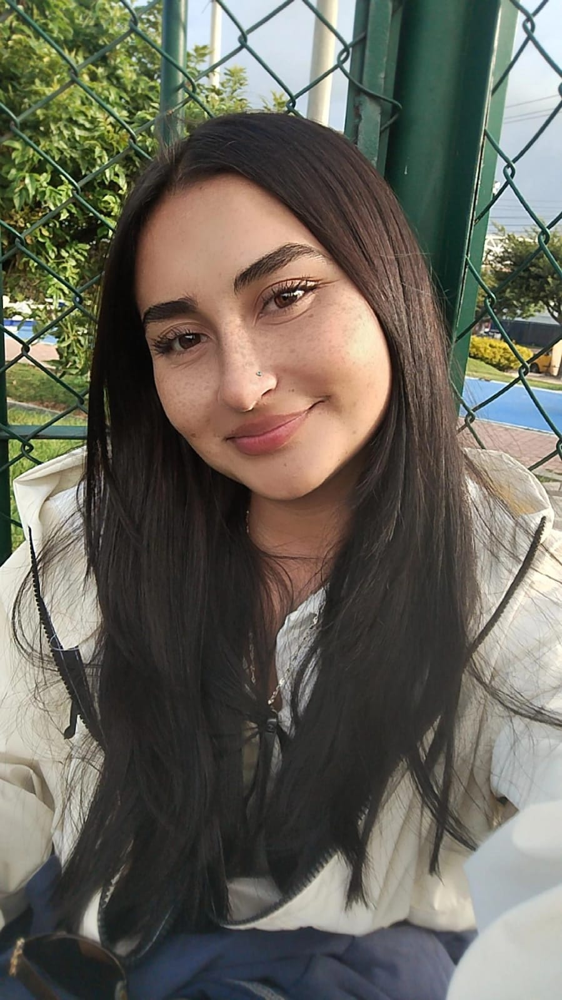
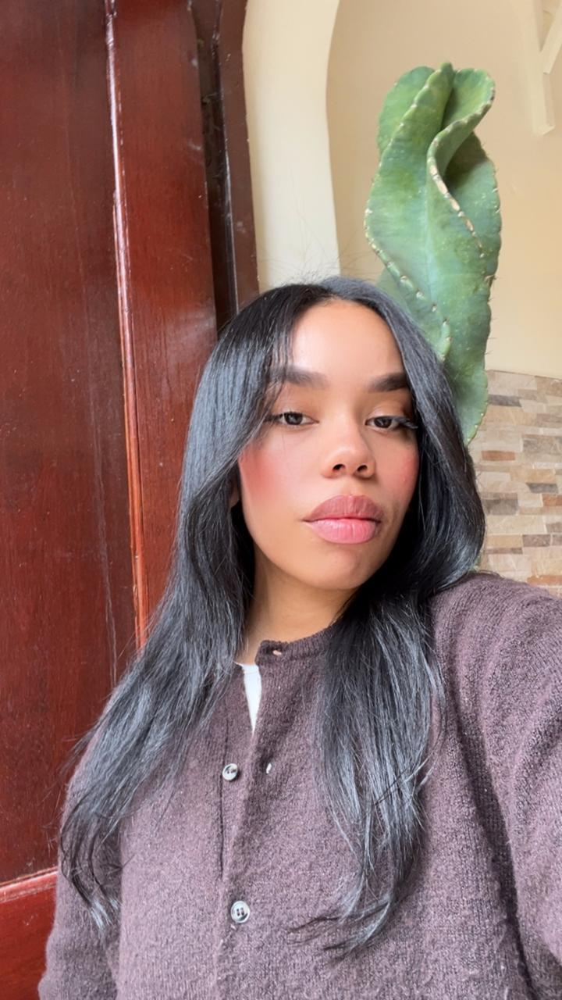
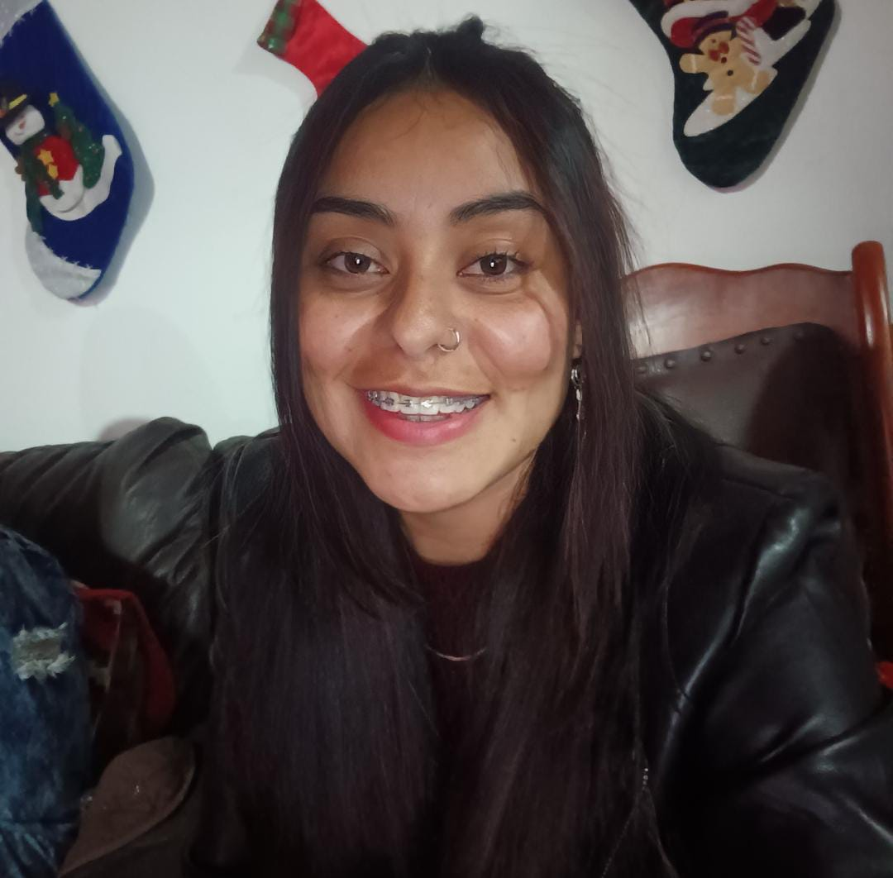
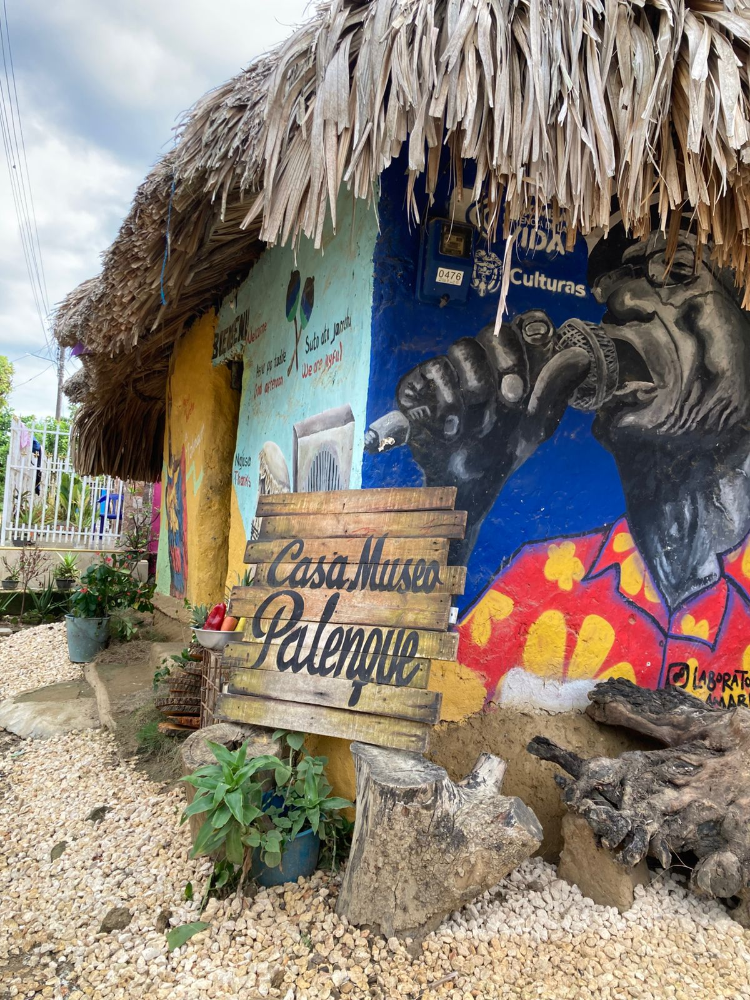

Atrapa la atención inmediatamente con una promesa audaz o una visión clara del futuro.
Empezar AhoraEl presente proyecto tiene como propósito rendir homenaje a la comunidad afro-palenquera mediante una remembranza de sus tradiciones, su cultura y su historia. A partir de un enfoque de investigación-creación, se desarrollará un poemario ilustrado que integrará collages, ilustraciones y composiciones poéticas con el fin de visibilizar y valorar la herencia cultural de esta comunidad.
Cada página del poemario será concebida, diseñada e intervenida por las integrantes del grupo, quienes aplicarán sus conocimientos disciplinares y competencias en diseño para construir una pieza editorial que articule recursos visuales y literarios. Este proceso creativo busca no solo exaltar la memoria colectiva afro-palenquera, sino también reconocer la importancia de sus prácticas culturales dentro del panorama sociocultural colombiano.
El equipo está conformado por cuatro integrantes, cada una aportando desde sus conocimientos y competencias específicas.
Diseñadora gráfica

Diseñadora gráfica

>Diseñadora gráfica

Diseñadora gráfica
Diseñar y desarrollar un poemario ilustrado que, mediante soluciones gráficas como collage, ilustración y composición editorial, comunique y ponga en valor la cultura de la comunidad afrodescendiente de San Basilio de Palenque.
el poemario de manera que la información que allí se encuentre cumpla con el propósito de visibilizar y dar a conocer de manera poética la comunidad afro palenquera. Sus creencias, su cotidianidad, cultura e historia.
Siguiente
Nuestro producto principal, es un poemario ilustrado inspirado en nuestra experiencia con la comunidad afro-palenquera y nuestro paso por este.
Poster representativo de la cultura y su comunidad.
Esta se conecta con el poemario ya que sirve como fuente de recopilación de su historia, sus vivencias y raíces. Modelo de negocio: Venta del libro en ferias, eventos y por medio de la página web.
Nuestro público está centrado en estudiantes y personas interesadas en la cultura, la tradición oral, el arte, la identidad y la historia nacional que tengan entre 15 a 35 años.
SiguienteVenta del libro en ferias, eventos y por medio de la página web. Estrategia de marketing y ventas: Promocionarlo por medio de redes sociales y piezas gráficas físicas.